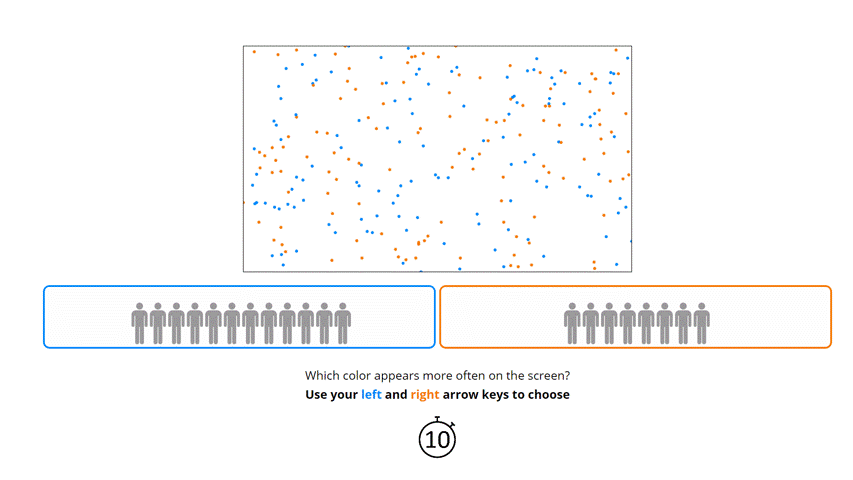

<!DOCTYPE html>
<html>

<head>
	<title>Ratio Game</title>
	<script src="jspsych-6.1.0/jspsych.js"></script>
	<script src="jspsych-6.1.0/plugins/jspsych-html-keyboard-response.js"></script>
	<script src="jspsych-6.1.0/plugins/jspsych-image-keyboard-response.js"></script>
	<script src="jspsych-6.1.0/plugins/jspsych-image-button-response.js"></script>
	<script src="jspsych-6.1.0/plugins/jspsych-html-button-response.js"></script>
	<script src="jspsych-6.1.0/plugins/jspsych-external-html.js"></script>
	<script src="jspsych-6.1.0/plugins/jspsych-fullscreen.js"></script>
	<script src="jspsych-6.1.0/plugins/jspsych-survey-html-form.js"></script>
	<script src="jspsych-6.1.0/plugins/jspsych-instructions.js"></script>
	<script src="jspsych-6.1.0/plugins/jspsych-survey-multi-select.js"></script>
	<script src="jspsych-6.1.0/plugins/jspsych-video-button-response.js"></script>
	<script src="jspsych-6.1.0/plugins/jspsych-survey-text.js"></script>
	<script src="jspsych-6.1.0/plugins/jspsych-image-slider-response.js"></script>
	<script src="https://code.jquery.com/jquery-3.3.1.slim.min.js"
		integrity="sha384-q8i/X+965DzO0rT7abK41JStQIAqVgRVzpbzo5smXKp4YfRvH+8abtTE1Pi6jizo"
		crossorigin="anonymous"></script>
	<script src="https://cdnjs.cloudflare.com/ajax/libs/popper.js/1.14.7/umd/popper.min.js"
		integrity="sha384-UO2eT0CpHqdSJQ6hJty5KVphtPhzWj9WO1clHTMGa3JDZwrnQq4sF86dIHNDz0W1"
		crossorigin="anonymous"></script>
	<script src="https://stackpath.bootstrapcdn.com/bootstrap/4.3.1/js/bootstrap.min.js"
		integrity="sha384-JjSmVgyd0p3pXB1rRibZUAYoIIy6OrQ6VrjIEaFf/nJGzIxFDsf4x0xIM+B07jRM"
		crossorigin="anonymous"></script>
	<script src="https://cdnjs.cloudflare.com/ajax/libs/axios/0.20.0/axios.js"
		integrity="sha512-nqIFZC8560+CqHgXKez61MI0f9XSTKLkm0zFVm/99Wt0jSTZ7yeeYwbzyl0SGn/s8Mulbdw+ScCG41hmO2+FKw=="
		crossorigin="anonymous"></script>
	<script src="data/ratio_conformity.js"></script>
	<link href="jspsych-6.1.0/css/jspsych.css" rel="stylesheet" type="text/css">
	<link href="styles/experiments.css" rel="stylesheet">
	<meta name="author" content="Ricardo Santiago Araújo">

	<script>
		/* Trying to set a delay but its not working correctly

		window.onload = function(){
			var theDelay = 10;
			var timer = setTimeout("showText()",theDelay*1000)
		}
		function showText(){
			document.getElementById("delayedText").style.visibility = "visible";
		}
		*/
	</script>


	<style>
		.leftallign {
			text-align: justify
		}

		.votesG {
			border: 3px solid #0088FF;
			width: 48%;
			border-radius: 10px;
    		overflow: hidden;
		}

		.votesR {
			border: 3px solid #ff7700;
			width: 48%;
			border-radius: 10px;
    		overflow: hidden;
		}

		.green {
			color: #0088FF;
		}

		.red {
			color:#ff7700;
		}


		.Focus {
			line-height: 200%
		}
	</style>

</head>

<body></body>
<script>

	//create timeline
	var timeline = [];

	// generate a random subject ID with 15 characters
	var subject_id = jsPsych.randomization.randomID(15);

	// record the subject ID in the jsPsych data
	// this adds a property called 'subject'  to every trial
	jsPsych.data.addProperties({
		subject: subject_id,
	});

	///////////////////////////////////////////////////////////////////////////////////////////////


	//Turn on fullscreen mode
	timeline.push({
		type: "fullscreen",
		fullscreen_mode: true
	});

	//Focus
	var Focus = {
		type: 'html-button-response',
		stimulus: '<h1 class="Focus"> Please ensure that you are sitting comfortably in a quiet environment, and will not be disturbed while doing the experiment.<br> We would like to have your full attention. </h1>',
		choices: ['Click here for the instructions'],
	}
	timeline.push(Focus)

	//Instructions
	var Instructions1 = {
		type: 'html-button-response',
		stimulus: `<h3> Instructions </h3>
		 	<p class="leftallign">  In this section of the study, you will be shown screens full of <span class="green"><strong>blue</strong></span> and <span class="red"><strong>orange</strong></span> dots in a fictional online multiplayer game. We would like you to behave as you would if you were playing a real multiplayer game with  real users and make choices accordingly.
			<br> You will be asked <strong>which color appears more frequently on each screen</strong>. You will also be able to see input from the other users of the game. Answers from other players are represented by the icon below:
			</p> </img> <br>
			<p class="leftallign"> To pick <span class="green">blue</span> press your <strong>left arrow key</strong> and to pick <span class="red">orange</span> press your <strong>right arrow key</strong>.
			</p> </img>	 <br>
			 <br>
			 <p class="leftallign"> Try to be as accurate as possible! In the end there will be an option to leave your contact so that in a few days I will tell you how your performance compares to other participants.</p>` ,
		choices: ['Click here to see an example'],
	}
	timeline.push(Instructions1)


	// Example
	var demo1 = {
		type: 'html-button-response',
		stimulus: `<strong>Which color appears more often on the screen? </strong> Answer by using your keyboard's arrow keys:
		<ul>
 		<li>Press <strong>right arrow</strong> for <span class="red"><strong>ORANGE</strong></span></li>
  		<li>Press <strong>left arrow</strong> for <span class="green"><strong>BLUE</strong></span></li>
		</ul>
		At the same time, <strong>votes from other users are shown in a box of each color</strong>, corresponding to their vote.
		<br>
		</img>`,
		stimulus_width: 1000,
		choices: ['Click here to begin experiment!'],
		button_html: '<button class="jspsych-btn">%choice%!</button>',
		response_ends_trial: true
	}
	timeline.push(demo1);

		// Countdown to start
		var Countdown = {
		type: 'image-button-response',
		stimulus: `img/COUNTDOWNtoSTART.gif`,
		stimulus_height: 700,
		choices: "",
		stimulus_duration: 5000,
		trial_duration: 4500,
		button_html: '<button class="jspsych-btn">%choice%!</button>'
	}
	timeline.push(Countdown);


	////////////////////////////////////////////////////////////////////////////////////////////////

	/* RATIO ESTIMATION TRIALS */


	// Ratio estimation trials
	var ratio_estimation_trial = {
		timeline: [
			{
				type: 'html-keyboard-response',
				stimulus: jsPsych.timelineVariable('ratio'),
				prompt: "<p><strong>Which color appears more often on the screen?</strong> <br>  Use your <u><span class ='green'>left </span> and <span class='red'>right</span> arrow keys</u> to choose  </p> <video src='vid/countdown15s.mp4' class='countdown' height = 65 autoplay = true> </div>",
				choices: [37, 39],
				data: {
					ratioID: jsPsych.timelineVariable('id'),
					freqGreen:jsPsych.timelineVariable('freqGreen'),
					leftRate: jsPsych.timelineVariable('left'),
					rightRate: jsPsych.timelineVariable('right'),
					trial: 'ratio-estimation-conformity'
				},
				trial_duration: 15000,
			}
		],
		timeline_variables: ratios,
		randomize_order: true,

		sample: {
			type: 'without-replacement',
			size: 15, // 10 trials, without replacement
		},
	}
	timeline.push(ratio_estimation_trial);


	//End of trials message
	var TestEnd = {
		type: 'html-button-response',
		stimulus: '<h4> This is the end of this task. </h4> ',
		choices: ['Continue to next section'],
	}
	timeline.push(TestEnd)


		//Feedback
		var Feedback = {
		type: 'survey-text',
		questions: [
			{ prompt: "<strong> Conclusion of experiment pilot. </strong> <br><br> <div class='leftallign'>Please write here any Suggestions/Observations about the experiment that you would like to share with us, as well as any bugs you have experienced. Your feedback is greatly appreciated! </div>", rows: 10, columns: 70 },
			{ prompt: "<div class='leftallign'> Were you already aware of the purpose of this experiment before you took part?</div>", rows: 3, columns: 70 },
			{ prompt: "<div class='leftallign'> <strong> Write here your name and e-mail address</strong> if you want to know how accurate your responses were compared to the rest of the participants. </div>", rows: 3, columns: 70}
		],
		data: {
			trial: 'feedback'
		},
	};
	timeline.push(Feedback);

	///////////////////////////////////////////////////////////////////////////////////////////////

	//The End
	timeline.push({
  type: 'html-keyboard-response',
  stimulus: 'Thank you for your feedback. <strong>Press any key</strong> to submit your data. You may then close this page.'
	});

	//Exit fullscreen
	timeline.push({
		type: "fullscreen",
		fullscreen_mode: false,
		message: "Thank you for your feedback. <strong>Press any key</strong> to submit your data. You may then close this page."
	});


	/* start the experiment (and save to database) */

	jsPsych.init({
		timeline: timeline,
		on_finish: function () {
			handleData();
		}
	});

	function handleData() {
		const questionnaireData = JSON.parse(jsPsych.data.get().json());
		const data = { data: questionnaireData };

		axios.post("https://mate-choice-test.herokuapp.com/questionnaires/add/ratio-conformity", data);
	}

</script>

</html>